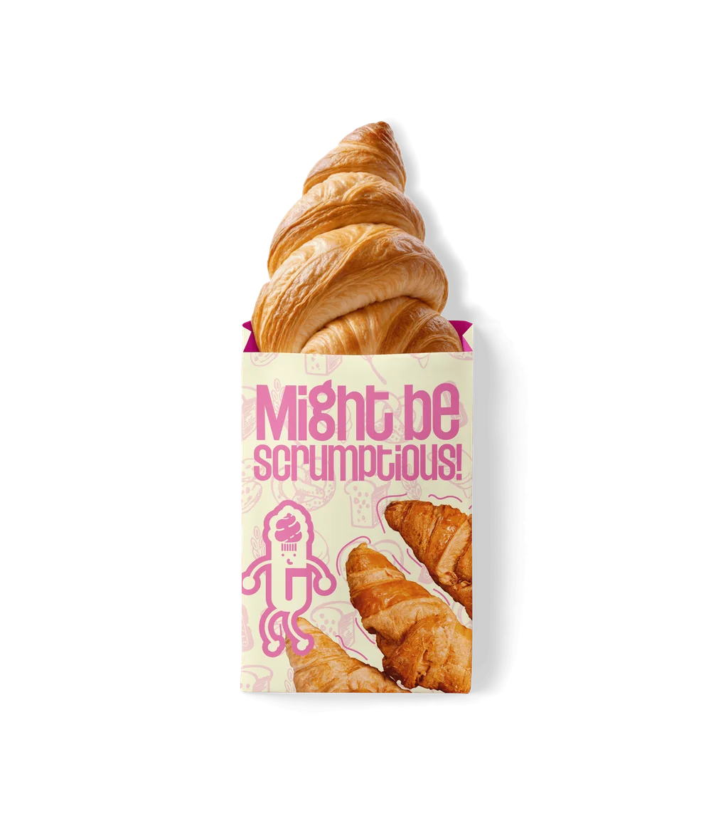
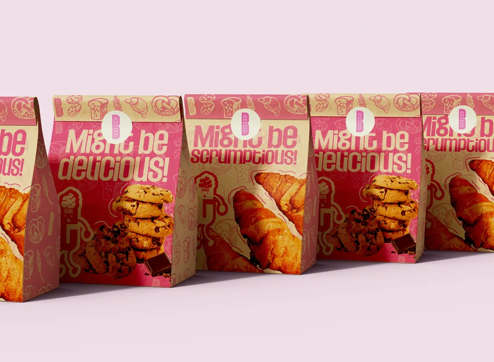
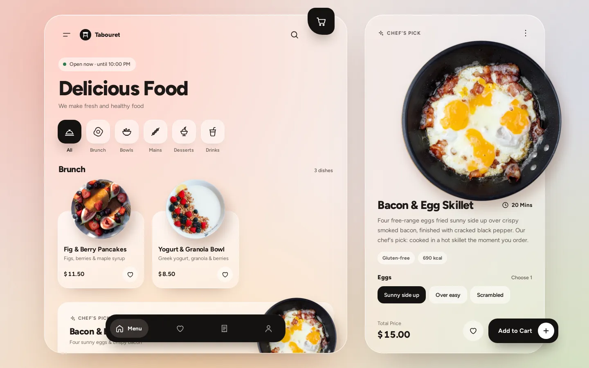

Kee · Kreeative
Process · 6 steps
My design process in 6 steps, from brief to launch.
With a real project behind each one.
Swipe →
My design process01 / 08
Process · 6 steps
With a real project behind each one.
Swipe →
01 · Brief
Before I open anything. For Lyzma Industries: handcrafted luxury that keeps the feeling of the hand.
Lyzma Industries · brief
“Refined enough for high-end jewellery, warm enough to honour the craft.”
02 · Research
For The Ivory Sukundu it was always the same: where does this length land? The answer became the length guide.
03 · Moodboard
For The Bakery: what does it feel like to bite into something you have craved all day? Hot pink and cream came from there.


04 · Concepts
This week my LinkedIn banner went through five palettes before the darkest brown, ivory and baby pink stuck.
Black
Cream
Ivory
Chocolate
Darkest brown ✓
05 · Refine
Rich & Friends v1 went quiet after nine days. v2 was rebuilt against the reasons people quit: one shared check-in, a rate instead of a streak.
v2 · one shared check-in
v2 · a rate, not a streak
06 · Launch
Tabouret’s whole ordering flow works in the browser, and every decision lives in a file, so the next version starts from reasons.

Save this ↓
kreeative.xyz